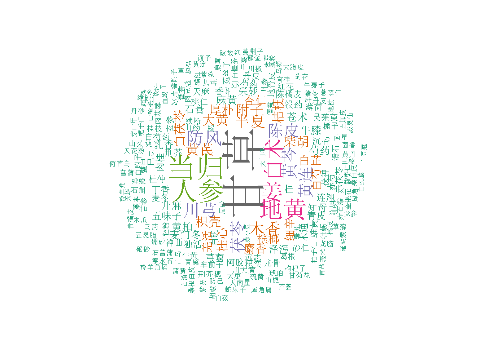

There are 24780 Prescripts’ info collected from different sources.
Since one prescription could have more than 1 variations of components or doses, the real prescription lines are 51974 .
- The Prescription Data Contains: Prescription Names(方剂名), Components(方剂组成), Functions(方剂功能) & Cures(方剂主治)
Example of the Names of Prescriptions as Collected & Cleaned:
# A tibble: 6 x 3
Corrected_ChName PinYin Reference
<chr> <chr> <chr>
1 <U+963F><U+827E><U+4E38> AAiWan «<U+533B><U+7EDF>»<U+5377><U+516B><U+5341><U+56DB>
2 <U+963F><U+827E><U+4E94><U+82D3><U+6563> AAiWuLingSan «<U+5D69><U+5D16><U+5C0A><U+751F>»<U+5377><U+516B>
3 <U+963F><U+83DC><U+6C64> ACaiTang «<U+996E><U+81B3><U+6B63><U+8981>»<U+5377><U+4E00>
4 <U+963F><U+8299><U+84C9><U+9152> AFuRongJiao «<U+9972><U+9E64><U+4EAD><U+96C6><U+65B9>»
5 <U+827E><U+67CF><U+996E> AiBaiYin «<U+9A8C><U+65B9><U+65B0><U+7F16>» <U+5377><U+4E00>
6 <U+827E><U+80A0><U+6CE5> AiChangYin «<U+4E2D><U+56FD><U+63A5><U+9AA8><U+56FE><U+8BF4>»
- The Chinese Prescription Names are pending to translated into English.
Example of Prescription Components (方剂组成) from above collections:(there are 86 component columns, below only show the first 5 of them)
# A tibble: 6 x 7
Corrected_ChName PinYin Compo1 Compo2 Compo3 Compo4 Compo5
<chr> <chr> <chr> <chr> <chr> <chr> <chr>
1 <U+963F><U+827E><U+4E38> AAiWan "<U+767D><U+59DC>(<U+76D0>\\~ <U+9999><U+9644><U+5B50>(<U+7AE5>~ <U+7384><U+80E1><U+7D22>(~ <U+771F><U+963F><U+80F6>(~ <U+827E><U+53F6>(~
2 <U+963F><U+827E><U+4E94><U+82D3><U+6563> AAiWuLingSan "<U+4E94><U+82D3><U+6563>" <U+963F><U+80F6>1<U+94B1> <U+5DDD><U+828E>1<U+94B1> <U+7518><U+8349>(<U+7099>~ <U+5F53><U+5F52>3<U+94B1>
3 <U+963F><U+83DC><U+6C64> ACaiTang "<U+7F8A><U+8089>1<U+811A><U+5B50>" <U+8349><U+679C>5<U+4E2A> <U+59DC>(<U+826F>)2~ <NA> <NA>
4 <U+963F><U+8299><U+84C9><U+9152> AFuRongJiao "<U+6EF4><U+82B1><U+70E7><U+9152>1~ <U+6F6E><U+8111>7<U+94B1> <U+963F><U+7247><U+70DF><U+818F> <NA> <NA>
5 <U+827E><U+67CF><U+996E> AiBaiYin "<U+827E><U+53F6>1.5<U+94B1>" <U+67CF><U+5B50><U+4EC1>1.5~ <U+5C71><U+8438><U+8089>1~ <U+4E39><U+76AE>1.5~ <U+5927><U+5730><U+9EC4>~
6 <U+827E><U+80A0><U+6CE5> AiChangYin "<U+85CF><U+74DC><U+59DC><U+7CDF>6~ <U+5730><U+9EC4>(<U+719F>)6~ <U+59DC>(<U+751F>)1~ <U+827E>15<U+94B1> <NA>
- Components context & doses will be further cleaned.
A Wordcloud chart of the first 200 prescriptions’ herb components is shown below:

Example of Prescription Treatments (方剂主治) from above collections:(there are 60 Cure columns, below only show the first 5 of them)
# A tibble: 6 x 7
Corrected_ChName PinYin Cure1 Cure2 Cure3 Cure4 Cure5
<chr> <chr> <chr> <chr> <chr> <chr> <chr>
1 <U+963F><U+827E><U+4E38> AAiWan <U+8840><U+5D29> <U+8001><U+5987><U+5C24><U+6548> <NA> <NA> <NA>
2 <U+963F><U+827E><U+4E94><U+82D3><U+6563> AAiWuLingSan <U+5C3F><U+8840> <U+5176><U+4EBA><U+7D20><U+597D><U+8272> <U+5C5E><U+865A><U+8005> <NA> <NA>
3 <U+963F><U+83DC><U+6C64> ACaiTang <U+8865><U+4E2D><U+76CA><U+6C14> <NA> <NA> <NA> <NA>
4 <U+963F><U+8299><U+84C9><U+9152> AFuRongJiao <U+8DCC><U+6251><U+5185><U+635F> <U+98CE><U+6E7F><U+8D70><U+6CE8> <U+652F><U+8282><U+9178><U+75BC> <U+95EA><U+8170>~ <NA>
5 <U+827E><U+67CF><U+996E> AiBaiYin <U+9F3B><U+8840><U+4E0D><U+6B62> <U+65E0><U+8BBA><U+865A><U+5B9E><U+81F3><U+91CD><U+8005> <NA> <NA> <NA>
6 <U+827E><U+80A0><U+6CE5> AiChangYin <U+6253><U+6251><U+7B4B><U+631B> <U+9AA8><U+95EA><U+632B> <U+53CA><U+4E45><U+5E74><U+6253><U+6251><U+75DB> <NA> <NA>
- Prescription Function & treatments will be further cleaned.
A Wordcloud chart of the first 200 prescriptions’ treatments is shown below: